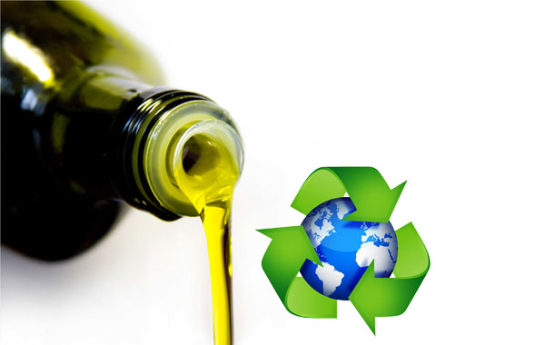

Quant saps sobre el reciclatge?

3- On cal llençar l'oli vegetal usat després de cuinar?
a) Es pot transportar en bidons a la deixalleria o dipositar als contenidors especials de la ciutat
b) L'oli usat es llença al camp perquè és biodegradable
c) Es pot tirar per l'aigüera?
Següent